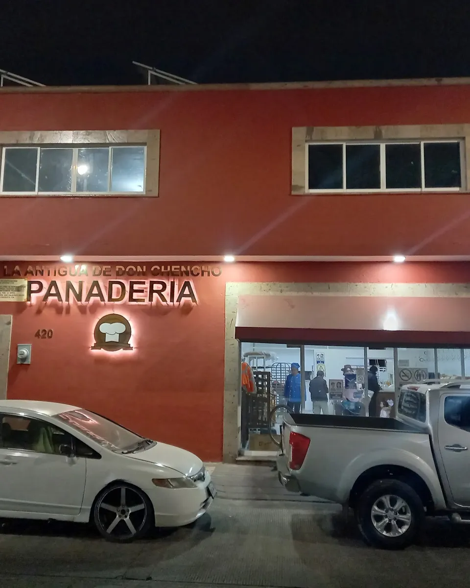
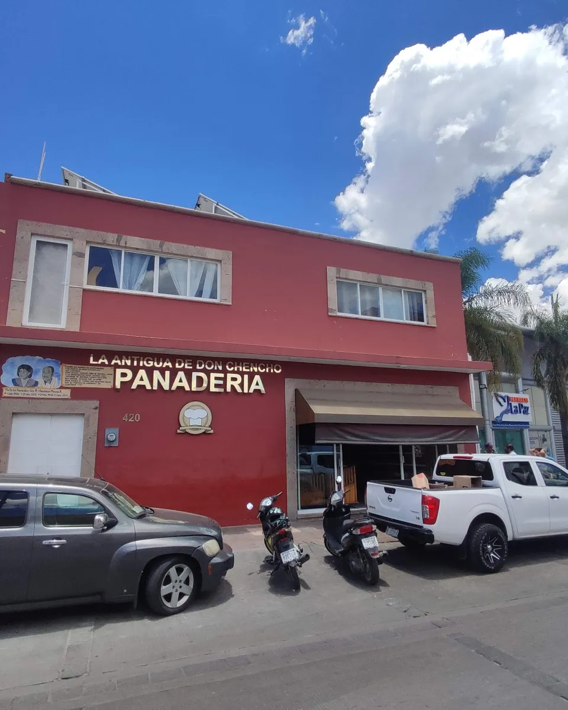
Pan recién hecho. A cualquier hora.
Abierto las 24 horas, todos los días.
El pan de la casa
Llena tu bolsa. Nosotros la armamos.
Toca lo que se te antoje. Los precios te los damos por WhatsApp.
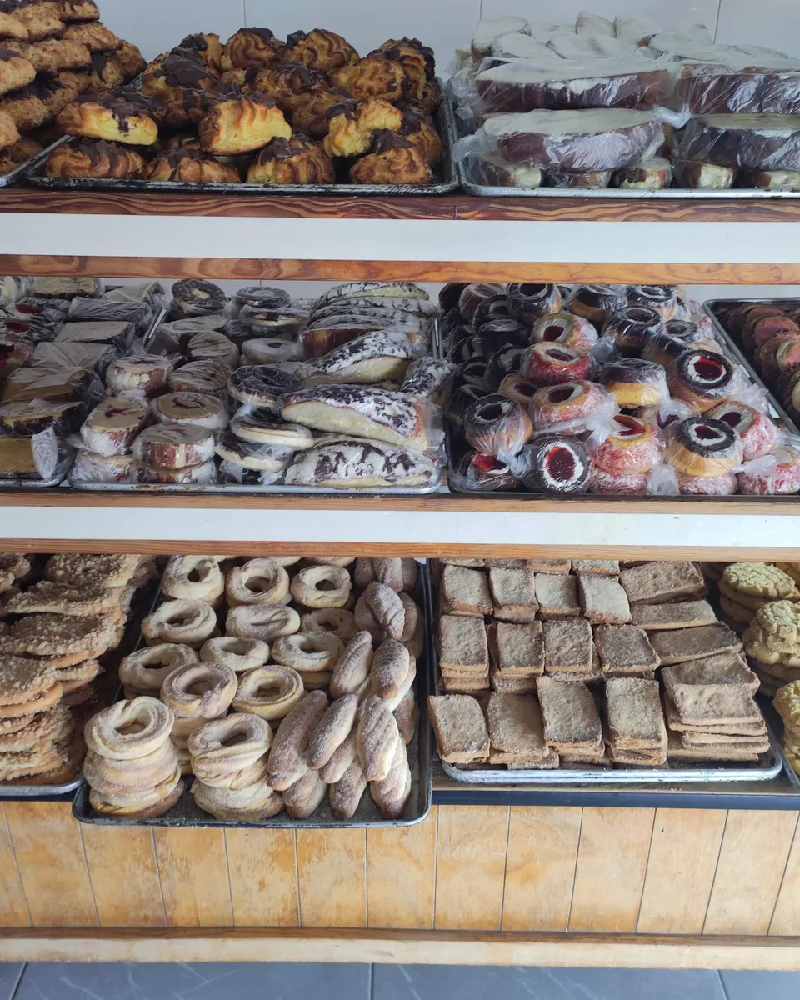
De todo.
Siempre.
Abierto todos los días, de domingo a sábado.
Ver horario y mapa →Pregúntales a ellos.
Lo que más repiten en sus opiniones
- sabor60
- rico42
- regalo31
- bolillo28
- empanadas26
- guayaba22
- tradicional20
Veces que aparece cada palabra en las opiniones de Google.
“Ayer fui por primera vez, en verdad me sorprendieron: más variedad de pan que no ves en otra panadería normal. Tienen de todo tipo de panes.”
“Pan recién hecho, no tiene el sabor industrializado. A cualquier hora encuentras una rica concha. Me encanta llevar mi café y disfrutarlo en el acueducto, a unos metros.”
Pásale. Tú escoges.
Vitrinas de madera y charolas a la vista. Desliza para dar la vuelta.
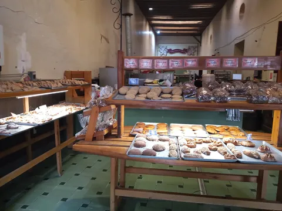
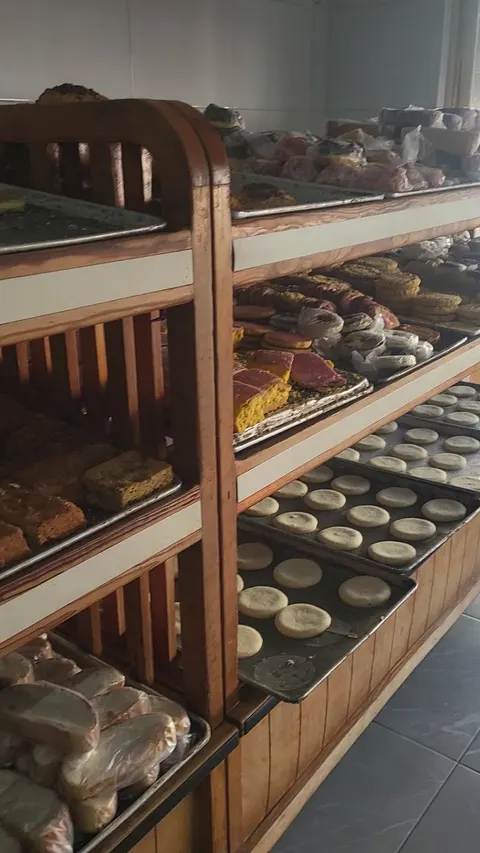
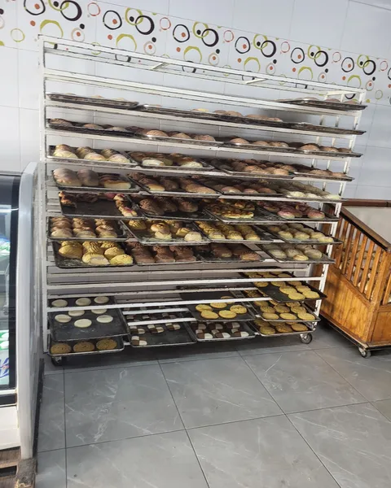
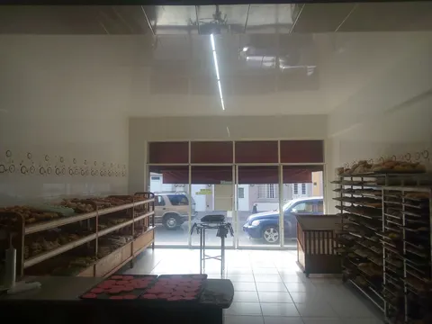
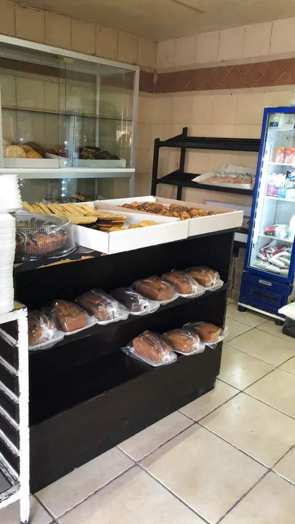
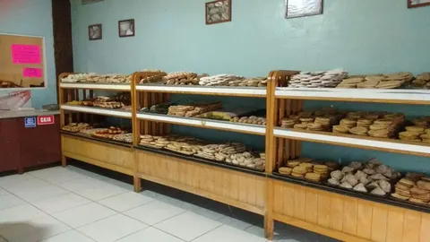
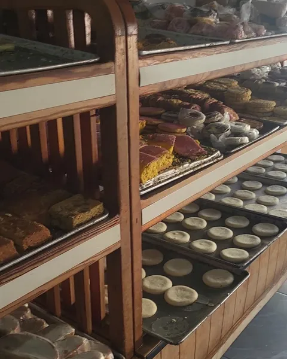
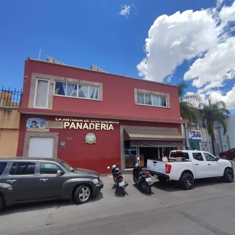
Galeana Sur 420, en el Obraje.
Abierto ahora · nunca cerramos
- Dirección
- Galeana Sur 420, Obraje, 20230 Aguascalientes, Ags.
- Servicio
- Para llevar y a domicilio
- Lunes24 horas
- Martes24 horas
- Miércoles24 horas
- Jueves24 horas
- Viernes24 horas
- Sábado24 horas
- Domingo24 horas
Antes de venir.
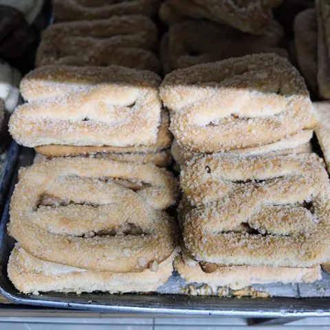
¿A qué hora abren?
Nunca cerramos. Abierto las 24 horas, de domingo a sábado.
¿Llevan a domicilio?
Sí, hay entrega a domicilio. Mándanos tu dirección por WhatsApp.
¿Qué es lo que más piden?
En las opiniones lo que más se repite es el bolillo, las empanadas de guayaba y las conchas.
¿Hacen pasteles?
Sí, hay pastel en vitrina. Pregunta sabores y tamaños por WhatsApp.
¿Puedo apartar mi pan?
Arma tu bolsa arriba y mándala por WhatsApp con la hora en que pasas.
¿Dónde queda exactamente?
Galeana Sur 420, en el barrio del Obraje, a unos metros del acueducto.
Todo listo para completar.
- WhatsApp oficial de la panadería
- Precios de cada pieza
- Nombres y fotos de más pan
- Más opiniones de clientes
Pásanoslo por el mismo chat donde te llegó esta muestra.